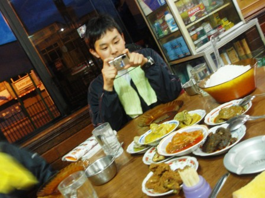
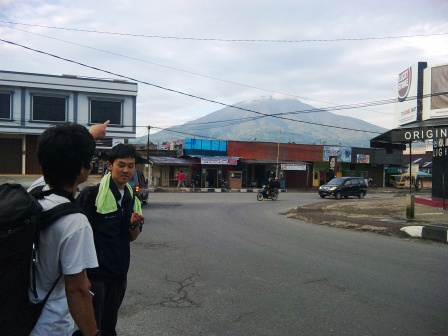
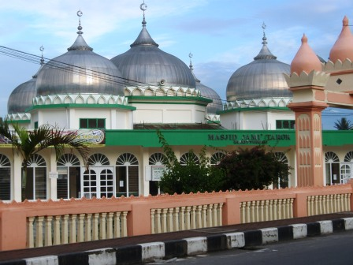
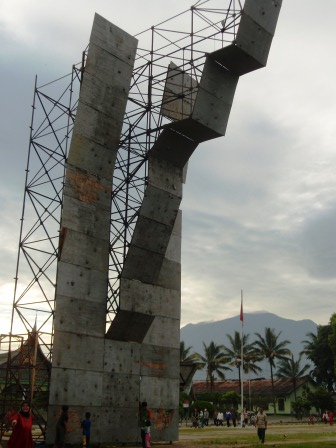
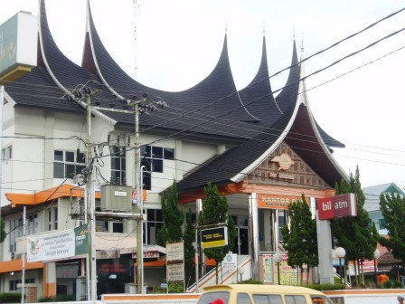
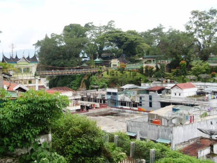
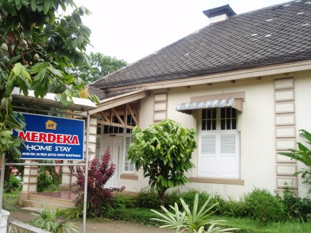
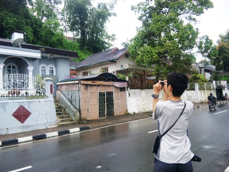
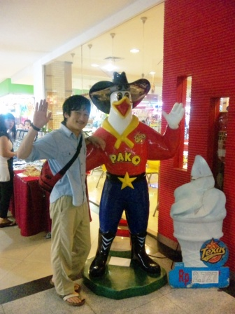
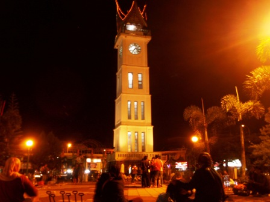

13日目～赤道直下の理想郷～

20時間に及ぶ行程を経て、僕たちはモレイニムからブキティンギへと到着した。到着は朝6時前とまだ薄暗い時刻ではあったため、バスターミナルの周辺の店舗はまだ開店前のところが多かったが、ここでもタクシーの運転手はやたらと声をかけてきた。まず、長いこと狭い車内で窮屈な思いをしたので腹が減った。そこで、地球の歩き方にものっているリーズナブルなパダン料理店のシンパンラヤで朝食をとることにした。本場だからかただ朝早かったからだけなのかは定かではないが、ここで出される料理やごはんは今まで食べてきたような冷たいものではなく、湯気が立ち上るようなほかほかなものだった。


高原都市、ブキティンギの周りにはこんもりとした山があった。下の写真はおそらく有名なシンガラン山。

バスターミナルから町の中心部まで行こうと思ったが、地図を完全に読み違えていて最初はなかなかたどり着けなかった。今まで見たスマトラの街々では見たことのないような立派なモスクがあった。

これはドリアンだろうか。

市民が集う広場では巨大なクライミングウォールを発見。このあたりでようやく現在地把握に成功。

この独特な形の屋根の建物はミナンカバウ族の伝統家屋で、牛の角をかたどったものである。ミナンカバウ族は世界的にも珍しい女系社会の民族で、家などの所有権はすべて女性にあるらしい。

町の中心部は活気に満ち溢れていた。坂の多い町で、階段も多く作られていた。どことなく京都を思わせるようなお土産屋が多数立ち並んでおり、今までの町とは全く雰囲気を異にしていた。そして、高原都市であるブキティンギの標高は900m前後である。そのため、太陽が高く昇ってもそこまで気温・湿度ともに上昇することはなく、とても過ごしやすい。


ブキティンギは、昔は要塞の町だった。そのときの要塞はコック要塞と呼ばれ、今では博物館として観光客に人気のスポットとなっている。これは歩道橋であるが、博物館に入場しないと渡ることはできない位置にある。結局、僕たちはこの博物館に入ることは無かった。


まず宿を探すことにした。地球の歩き方にのっていたムルデカホームステイは一人300円なのに室内は清潔で広く、温水シャワー付き(5分ほどで冷水に変わる)！さすが観光名所！さすがブキティンギ！

宿で一服した後は昼食を食べに再び町の中心部へ。割ときれいな家屋が多く、窓辺でネコがお昼寝をしていた。この町のネコは毛並みがよく汚れていない。


今まで辛いものばかりだったのでKEN以外は腹を壊し続けていた。そのため、中華料理を食べようじゃないかという話になり、入ったのがモナリサ。店内は地味な感じで、奥では有名なモナリザの油絵が壁にかけてあった。中華料理店なのにチンジャオロースーと言っても全く通じなかったのが残念だった。メニューも中華料理名が書かれているわけではなく、インドネシア語で書かれていたので何が何にあたるのかは会話帳で調べなければわからないものもあった。出された料理はみなおいしく、満足だったのだが、食事後の明細を見てびっくり！3泊分の宿代にせまる20万ルピア越えだったのだ。これは高い…。ブキティンギには3泊する予定なのだが、ここにはもう2度と来ないだろう。そして、メニューに値段の書かれていない店では事前にちゃんと確認しておかねばならないと思った。
昼食後、旅行会社に行き、明日のジャングルトレッキングと明後日のレンタルバイク、そして明々後日のジャカルタへ戻るための航空券を買った。ジャングルトレッキングとレンタルバイクは値切りに成功し、それぞれ2千円、6百円程度になった。

宿に戻る途中は雨にやられた。その後は激しい雨が続き、夕方になってあがったので夕飯を食べに中心部へと向かおうとすると、民家の屋根などに5、6匹のサルがいた。


夕飯市街地中心部のデパート内にあるファストフード店、テキサスチキンで食べた。これだけのセットで値段は400円前後。他のレストランと比べるとあまり安くはない。ちゃんとイメージキャラクターまでいた。

食後、デパートの近にある町のシンボルの時計塔前広場に行ってみた。広場では露店もあり、光る竹トンボのようなもので遊んでいるおじさんもいた。真剣に遊んでいるのではなく、子供たちに見せて売っているのだ。
翌日へ